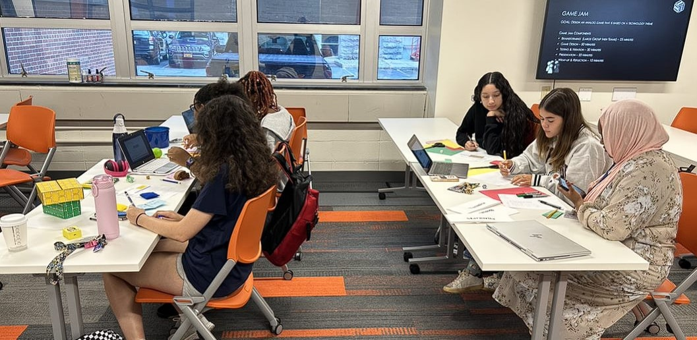

Mary Schwedatschenko / July 21, 2023
Our game was called Cipher Search, and it was a treasure hunt you would play using cryptology. The basic premise was that we made a bunch of clues that corresponded to objects in places around the room. The game/tricky part was that all the clues were encrypted.
Our challenges in creating the game were trying to figure out the hard questions for the clues.
I eventually came up with the idea of using a riddle and the answer to the riddle was a keyword that the player had to use to decrypt the clue. It was kinda complicated, but it came out pretty cool.
If we had more time, I'd be interested in expanding the game by adding more clues and more depth to some of the existing ones. I would also like to make them kinda connect in a way. We were thinking about doing that at the beginning and making it more team oriented but it turned out to just be more of an individual competitive game.
Mary Schwedatschenko / July 21, 2023
The video below is a tutorial on how to add emojis into html. I found it very cool because I like using emojis in text to amplify how I am feeling when I message someone.
Mary Schwedatschenko / July 18th, 2023

I found this meme on r/machinelearningmemes. I thought it was funny because it shows Scooby and the gang unmasking a guy labeled bad model. This means bad ai or machine learning model. It then shows the team unmasking them and then underneath is the guy's real identity, bad training data. Bad training data means that whomever trained the model provided bad data from the model to learn from. This is good at displaying its point because it is easy for the reader to understand if they have a very rudimentary knowledge of ai and machine learning.
Mary Schwedatschenko / July 18th, 2023
Maureen Baginski is the executive assistant director of intelligence at the Federal Bureau of Investigation. During her time working there, she successfully led the FBI’s first-ever intelligence program. Before this, she began her career in 1979 as a Russian language teacher at the National Security Association (NSA). She later became the lead analyst of the Soviet Union and held various other positions, including executive assistant to the director of the NSA and SIGINT Director, which was the 3rd highest position in the NSA. She was SIGINT Director during 9/11 and was a key piece in formulating NSA’s response to the 9/11 attacks.
She was working for the NSA and the FBI for most of her career. However, after she retired, she had a few positions within the private sector and has held senior positions at a handful of companies.
Her work took place during 1979-2005. Her official work ended when she retired in 2005, but accepted a position as a senior advisor of the FBI.
https://www.nsa.gov/History/Cryptologic-History/Historical-Figures/Historical-Figures-View/Article/1620541/maureen-baginski/
https://en.wikipedia.org/wiki/Maureen_Baginski